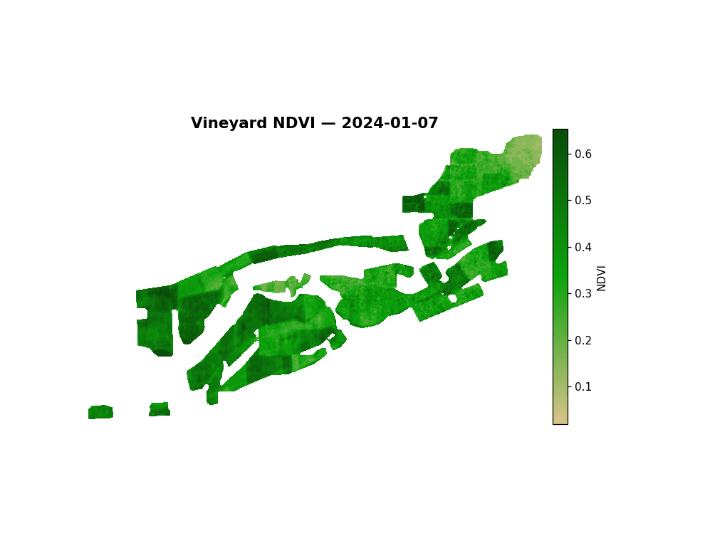

1. The pipeline — Python + Google Earth Engine

Nine years of Sentinel-2 NDVI, USGS terrain, gSSURGO soil, and gridMET climate data, fused across 33,028 hex cells and fed into a gradient-boosted model predicting harvest-window NDVI anomaly. Random Forest and GBT were both trained and compared; GBT won.
Full write-up →
Vineyard block polygons were drawn by hand in Google Earth, translated from KML to GeoJSON and retiled into 33,028 equal-area hexagonal cells ~10 m across, one Sentinel-2 pixel apiece). Cells are overlaid a terrain profile from the USGS 1 m DEM, soil properties from USGS gSSURGO, daily weather from gridMET, and NDVI data from Sentinel-2 pulled via Google Earth Engine. Nine years of data were used to train a stacked gradient-boosted model in PySpark MLlib to predict each cell's harvest-window NDVI anomaly
Real problems the GEE pull actually hit
FeatureCollection blew past GEE's 10 MB
request cap. Fixed by uploading the tile centroids as a GEE asset
once, then referencing that asset ID in every export task instead
of re-sending geometry each time.
filterBounds() against the uploaded asset returned
zero images — GEE didn't recognize a spatial extent on an asset
built from bare points. Fixed by computing an explicit
ee.Geometry.BBox from the centroid CSV's own
lon/lat min/max instead of trusting the asset's implicit bounds.
reduceRegion() returned null.
sampleRegions() against the polygon set, not a
buffered point, was the fix.
Feature engineering: does decomposing slope + aspect actually help?
slope_mean (a magnitude) and aspect_mean
(a 0–360° compass bearing) each throw away information on
their own — a slope's magnitude doesn't say which way the
hillside faces, and a bearing near 359° is actually right next
to 1°, not far from it. The fix: treat slope + aspect as one 2D
vector instead — slope_x = tan(slope) ×
cos(aspect), slope_y = tan(slope) ×
sin(aspect), plus profile_curv/plan_curv
(curvature split into along-slope vs. across-slope, instead of one
collapsed total). Checked directly against the trained model
rather than assumed: slope_x is the model's
#8 most important feature of 271, ahead of plain
slope_mean (#28) and elev_mean (#15).
Not every decomposition pays off the same way — the curvature
split stays weak either way — but this one is real, not a
BI-tool exercise. Same math, reused on the Looker
side of this project.
Model training — Random Forest vs. Gradient-Boosted Trees
271 features — 35 weeks of pre-harvest NDVI trend, 35 weeks of NDVI variability, 160 climate columns, 25 terrain, 16 soil — predicting each cell's harvest-window NDVI anomaly (deviation from the vineyard-wide mean that week, which strips out vintage effects and isolates the spatial/terroir signal). Trained both a Random Forest and a GBT ensemble on an 80/20 split (264,543 train / 65,737 test rows); GBT won clearly and is the model behind this page's headline stat.
By feature group (Random Forest, similar split for GBT): NDVI slope-of-trend 61.0%, NDVI variability 15.8%, terrain 10.0%, climate 9.1%, soil 4.1% — canopy trajectory dominates, terrain is the largest non-phenology group.


slope_x at #8 is the terrain-decomposition result above, in context.Evaluation: actual vs. predicted
GBT predictions against ground truth on the held-out test set only (not the training rows) — a tight band along y = x across the full range, not just near the mean.
Residual diagnostics — where is the model wrong, and is it wrong randomly?
Applying the trained GBT model to every cell across all 10 years and mapping the average error back to the vineyard: per-tile mean residual is centered on zero (std 0.0176) with no systematic over- or under-prediction on average — but that average hides a real pattern once it's mapped spatially.


0.726 is strong spatial autocorrelation — a tile's error is a good predictor of its neighbors' errors. That's the honest read, not a "the model is great everywhere" one: terrain, soil, climate, and phenology don't capture everything spatially structured in this vineyard. The notebook's own framing is the right one — this is what missing variables (irrigation zones, row orientation, windbreaks, frost pockets) look like in residual space, not something 271 features and a bigger ensemble fixes on its own.
Full run order and every notebook: RegressionRidge/spark_pipeline/.
2. GIS branch — QGIS

Two static QGIS-authored views of the full 33,028-cell grid — an NDVI snapshot and a 9-year trend — plus a downloadable GeoPackage, sidestepping the row-count wall that crashes browser-based BI map charts. The interactive map at the top of this page extends the same grid to four layers, elevation and slope included.
Full write-up →
The same 33,028-cell grid that crashed a browser BI tool's map
chart (see below) is exactly what a desktop GIS tool is built for.
export_qgis.py joins the real hex polygon geometry to
terrain and a 9-year NDVI trend and writes one GeoPackage —
no aggregation, no row-count wall.
Two QGIS-authored maps, same grid
Graduated symbology, styled and exported from an actual QGIS
session — full 33,028-polygon resolution, no aggregation. One
layer colors by ndvi_mean_2025 (a sequential ramp —
how green is it right now), the other by
ndvi_trend_per_year (a diverging ramp — is it trending
up or down over 9 years). Elevation and slope get the same
treatment too, live rather than static — see the interactive map
at the top of the page.

Prefer these two static, or want the other two layers (elevation, slope) too? The full interactive version is at the top of the page.
What the full-resolution surface looks like
These are the matplotlib fallback — not QGIS output, but the same underlying grid rendered at full density, which is the point: neither of these figures aggregates or samples down from 33,028 cells.



3. BI branch — Looker Studio
Looker Studio dashboard built from star-schema CSVs, since Power BI wouldn't accept a personal-email signup. The report's canvas is 1200×900 — too wide for this column, so the live embed gets its own full-width section below the fold. CSVs and the full build write-up are right here.
Full write-up →
Power BI Service rejected personal-email signup outright, and its "free" workaround wanted a phone number and a subscription plan. Looker Studio works with a plain Gmail account — but its map chart draws one marker per row client-side and crashed the browser tab past a few thousand points, which this grid clears by a wide margin. The star-schema CSVs below are the real fix: same data, same tool, joined by hand in Looker Studio's Blend editor instead of trying to force 33,028 markers onto one map.
dim_cells.csv dim_years.csv fact_ndvi_yearly.csv